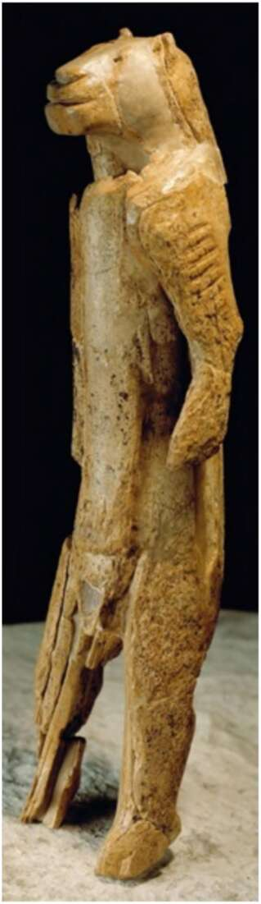

4. An ivory figurine of a ‘lion-man’ (or ‘lioness-woman’) from the Stadel Cave in Germany (c.32,000 years ago). The body is human, but the head is leonine. This is one of the first indisputable examples of art, and probably of religion, and of the ability of the human mind to imagine things that do not really exist. The amount of information that one must obtain and store in order to track the ever-changing relationships of a few dozen individuals is staggering. (In a band of fifty individuals, there are 1,225 one-on-one relationships, and countless more complex social combinations.) All apes show a keen interest in such social information, but they have trouble
